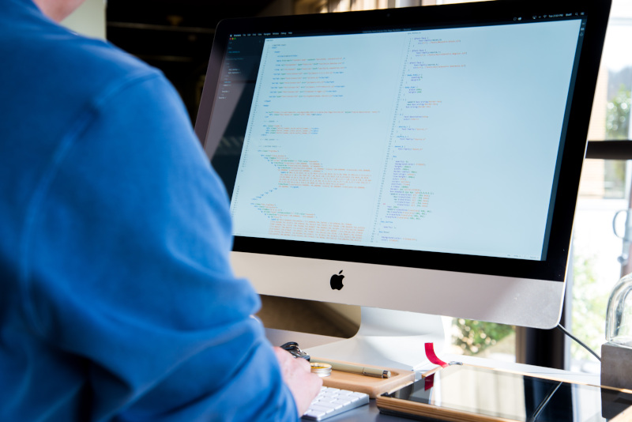

Praktik som iOS-utvecklare på Tradera

Genom praktiken hoppas jag få en djupare förståelse för hur det är att arbeta som utvecklare i ett större bolag, och se utvecklingsarbetet från ett annat perspektiv än det jag är van vid som QA.
Som en del av min utbildning ska jag göra praktik, och jag har själv ordnat en praktikplats som iOS-utvecklare på Tradera genom mitt nuvarande arbete som QA.

Genom praktiken hoppas jag få en djupare förståelse för hur det är att arbeta som utvecklare i ett större bolag, och se utvecklingsarbetet från ett annat perspektiv än det jag är van vid som QA.
| Kategori | Mål | Tidsram |
|---|---|---|
| Göra praktik som iOS-utvecklare på Tradera | Målet är att färdigställa min praktik som iOS-utvecklare på Tradera och att ta med mig kunskap och erfarenhet. | Januari 2027 |
| Få anställning inom IT efter studierna | Målet är att få anställning inom IT efter studierna och fortsätta utvecklas i min karriär. | Juni 2027 |
| Totalt antal mål | 2 | |